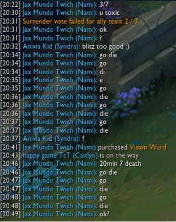

In tribal societies we are told that it is a familiar reaction, when some hideous event occurs, for some people to say, "How horrible it must be to feel like that," instead of blaming somebody for having done something horrible. This feeling is an aspect of the new mass culture we are moving into—a world of total involvement in which everybody is so profoundly involved with everybody else and in which nobody can really imagine what private guilt can be anymore.
